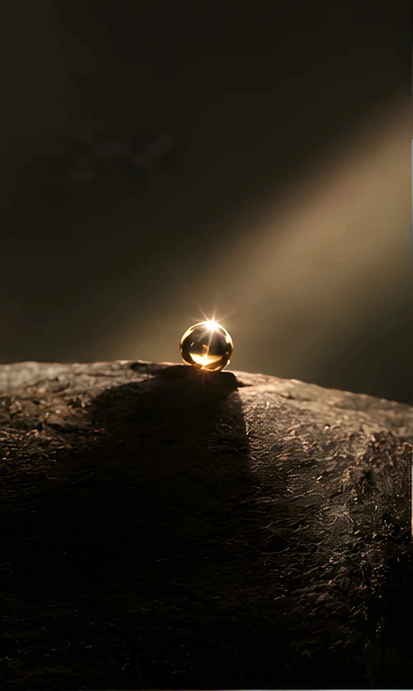
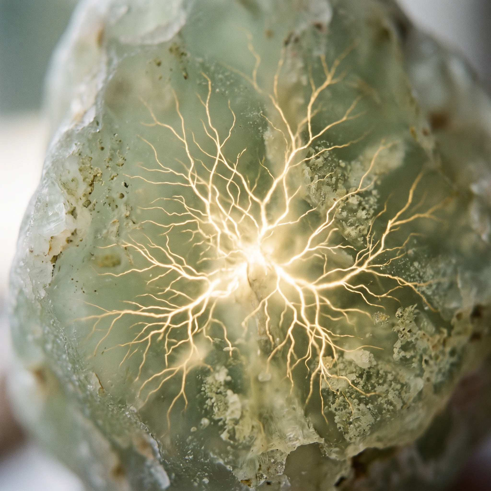
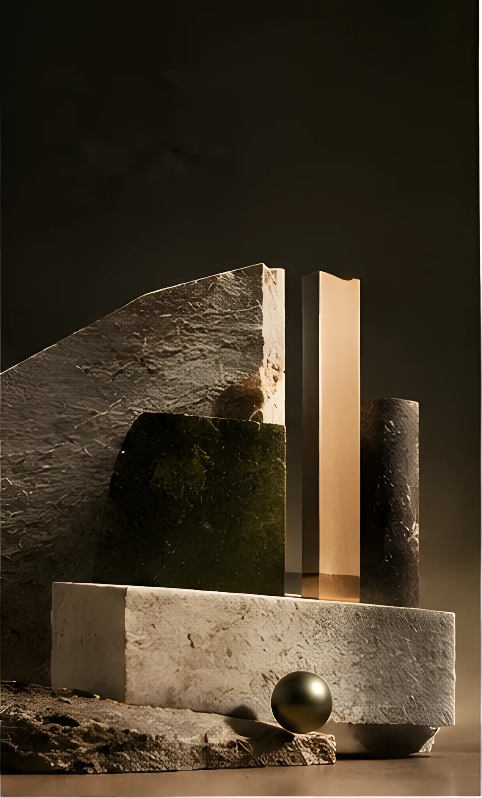
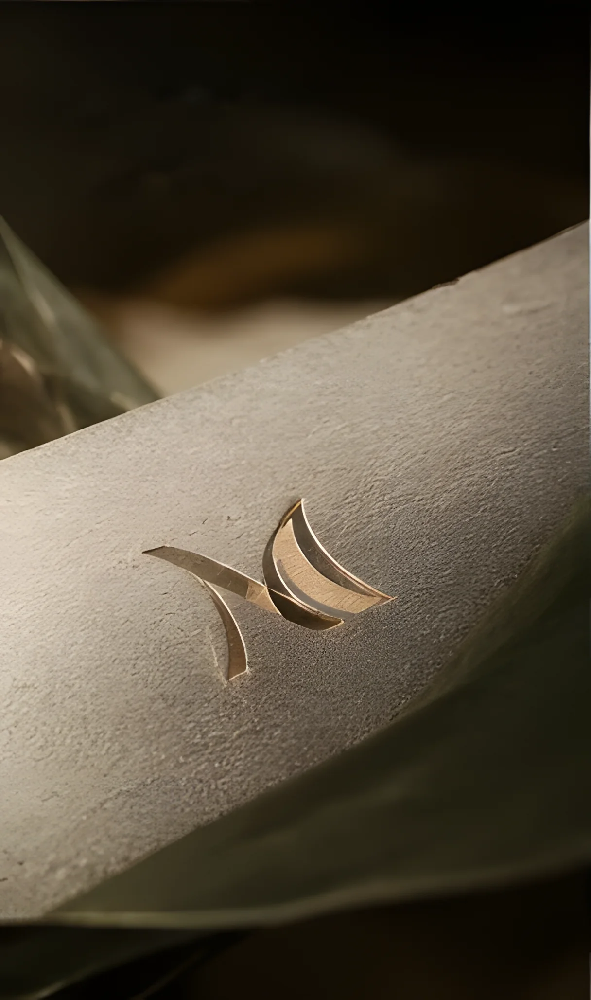

01Origin
Make Your Brand Impossible to Ignore.
Strategy, design, technology and marketing — connected to build stronger brands and better digital outcomes.
Reply time to be confirmed.
An idea appears — a single point of light in a quiet space.
02Awakening
The idea starts to move.
Most brands are built in pieces: a logo from one studio, a website from another, campaigns and search from someone else. We plan them as one line of thought.
Light begins to move through the material.
03Foundation
One line of thought, from position to enquiry.
1Position
We start with the business: who you serve, what you are competing against and what a good enquiry looks like.
2Design
Identity, messaging and page structure are designed together, so every decision traces back to the position.
3Build
Websites and campaigns are built to the design, with accessibility, performance and search structure as requirements.
4Grow
After launch we measure what brings qualified enquiries and improve it, in agreed, reviewable steps.
04Services
Five services, planned together.
01 / 05
Brand Strategy & Identity
A clear position, made visible.
Positioning, identity, campaign creatives
02 / 05
Web Design & Development
The same idea, on every screen.
UX/UI, websites, custom builds
03 / 05
Digital Marketing
One message, every channel.
Strategy, campaigns, social, content
05 / 05
Growth & Conversion
Measured by qualified enquiries.
Analytics, CRO, enquiry journeys
Illustration, not client work
05Work
Selected work
Client projects are published here only with the client's approval, with the facts they have confirmed. No client work is shown until approved projects are supplied.
Project 01 · awaiting an approved project
Project 02 · awaiting an approved project
Project 03 · awaiting an approved project
06Identity
Proof, with its sources.
We would rather show less than claim more. Every result we publish meets three rules:
- Published only with the client's written approval.
- Stated with a baseline, a time period and a data source.
- Concept work is always labelled as concept, never as client work.
07Ecosystem
Tell us what you are building.
Best suited to established businesses whose brand and website no longer reflect the quality of their work, and to new ventures that want to launch properly.
01Origin
Make Your Brand Impossible to Ignore.
Strategy, design, technology and marketing — connected to build stronger brands and better digital outcomes.

02Awakening
The idea starts to move.
Most brands are built in pieces: a logo from one studio, a website from another, campaigns and search from someone else. We plan them as one line of thought.

03Foundation
One line of thought, from position to enquiry.
- Position. We start with the business: who you serve, what you are competing against and what a good enquiry looks like.
- Design. Identity, messaging and page structure are designed together, so every decision traces back to the position.
- Build. Websites and campaigns are built to the design, with accessibility, performance and search structure as requirements.
- Grow. After launch we measure what brings qualified enquiries and improve it, in agreed, reviewable steps.

04Services
Five services, planned together.
- Brand Strategy & Identity. Positioning, identity, campaign creatives.
- Web Design & Development. UX/UI, websites, custom builds.
- Digital Marketing. Strategy, campaigns, social, content.
- SEO & GEO. Search and AI visibility.
- Growth & Conversion. Analytics, CRO, enquiry journeys.

05Work
Selected work
Client projects are published here only with the client's approval, with the facts they have confirmed. No client work is shown until approved projects are supplied.
06Identity
Proof, with its sources.
We would rather show less than claim more. Every result we publish meets three rules:
- Published only with the client's written approval.
- Stated with a baseline, a time period and a data source.
- Concept work is always labelled as concept, never as client work.
07Ecosystem
Tell us what you are building.
Best suited to established businesses whose brand and website no longer reflect the quality of their work, and to new ventures that want to launch properly.
EndPrototype, chapters 1–7
Scroll back up: every movement reverses with the scroll.
Images: storyboard panels 01 and 03–10 (AI-upscaled; panels 07–09 show the invented "MINERAL" brand and are labelled as illustration) and awakening-veins (original file, unchanged; shown with light and camera movement only). The golden light is drawn live in code. The logo is the real CALIX file. No client work, results or testimonials are shown.